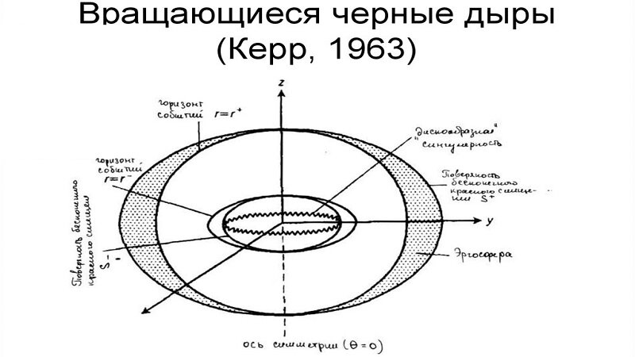
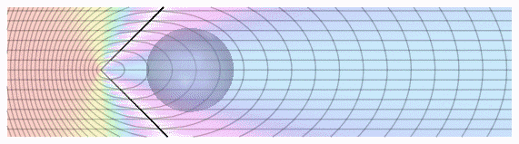
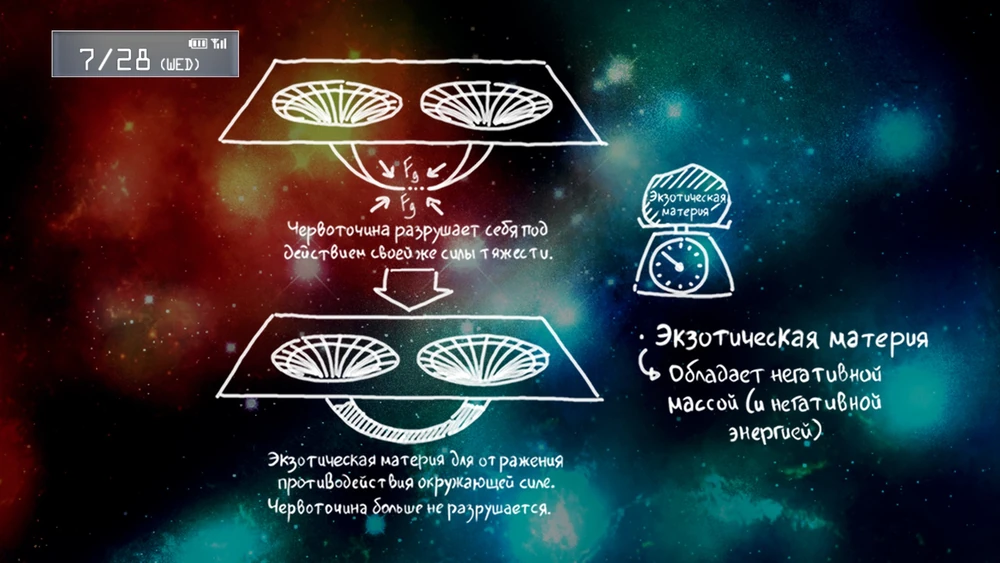
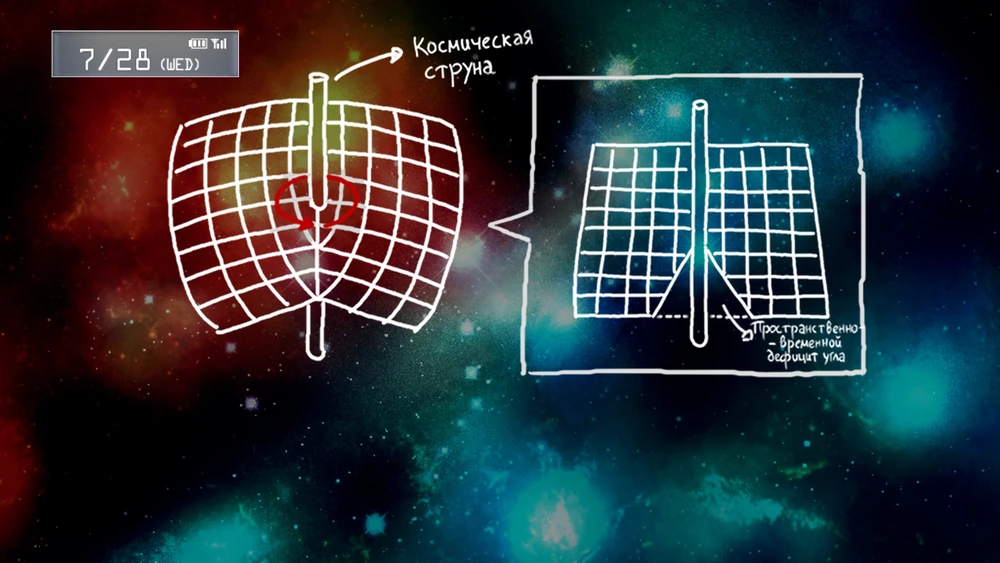

В научном сообществе существует 6 различных теорий путешествия во времени:
Теория путешествий во времени через нейтронные звёзды основана на том, что около таких звёзд время течёт медленнее, чем на Земле. Это следует из общей теории относительности: чем больше гравитация, тем медленнее течёт время. Таким образом, на теоретическом космическом корабле около нейтронной звезды время будет течь медленнее, чем на Земле, что позволяет путешествовать исключительно в будущее. Однако стоит отметить, что в реальности гравитационное замедление времени пока недоступно для путешествий во времени, так как нет близлежащих нейтронных звёзд и космических кораблей, способных преодолеть необходимые расстояния.
Теория используемая нашей Лабораторией для отправки ди-мейлов. Черная дыра Керра, или Вращающаяся чёрная дыра, обладает угловым моментом вращения и в её центре находится кольцевая сингулярность. Она имеет два горизонта событий, и соответственно время и пространство изменяется дважды. Можно пересечь сингулярность, но выйти тем же путем которым вошли не получится, или просто не попасть в неё. Если пересечь сингулярность, то скорей всего вы окажетесь в “отрицательном пространстве” (определение всё ещё не до конца определено). Если избежать её, то вы вернётесь к моменту, когда пересекли первый горизонт событий. Возможно, процесс гелефикации является как раз результатом пересечения сингулярности.
Тахион – это гипотетическая частица, которая в состоянии покоя движется со скоростью света. Так как тахионы движутся быстрее скорости света, то в теории с помощью них можно передавать информацию в прошлое. Основная проблема доказательства существования этой частицы – это нарушения принципа причинности. Если отправить тахион на какую-то отражающую поверхность, то отразившись, он прибудет на место отправки быстрее чем отправится. Так же с помощью него можно вызвать парадокс убитого дедушки, что приводит к логическим проблемам.
Но не смотря на все теоретические проблемы попытки найти эту частицу предпринимались. В сентябре 2011 года ЦЕРН объявили, что тау-нейтрон удалось разогнать быстрее скорости света. Но, как оказалось, это была лишь ошибка датчиков.
Теория относительности говорит нам, что при приближении скорости объекта к скорости света, его время замедляется относительно покоящегося объекта. Этот эффект называется релятивистским замедлением времени и его нельзя считать настоящим путешествием во времени, так как это лишь один из эффектов в теории относительности.
Общая теория относительности (ОТО) допускает существование таких туннелей, хотя для существования проходимой кротовой норы необходимо, чтобы она была заполнена экзотической материей с отрицательной плотностью энергии, создающей сильное гравитационное отталкивание и препятствующей схлопыванию норы.
Если существуют проходимые червоточины, они могут позволить путешествие во времени. Предлагаемая машина времени, использующая проходимую червоточину, гипотетически будет работать следующим образом: один конец червоточины ускоряется до околосветовой скорости, а затем возвращается в исходную точку. Другой способ состоит в том, чтобы взять один вход в червоточину и переместить его в гравитационное поле объекта с большей гравитацией, чем второй вход, а затем вернуть его в положение рядом со вторым входом. Для обоих этих методов замедление времени приводит к тому, что для внешнего наблюдателя перемещаемый конец червоточины стареет меньше или становится «моложе» неподвижного конца. Так как время соединяется через червоточину иначе, чем снаружи, то синхронизированные часы на любом конце червоточины всегда будут оставаться синхронизированными для наблюдателя, проходящего через червоточину, независимо от движения концов. Это означает, что наблюдатель, входящий в «молодой» конец, выйдет из более «старого» конца во время, равное возрасту более «молодого» конца, что продемонстрирует разный ход времени с точки зрения внешнего наблюдателя. Одним существенным ограничением такой машины времени является то, что изменить ход во времени можно только до момента создания этой машины. Появиться ранее события входа в саму червоточину не представляется возможным.
Космическая струна очень массивна, и поэтому может искажать пространство-время. Если вы попытаетесь сделать полный оборот внутри искажения, вы повернётесь менее чем на 360 градусов.” “Другими словами, ваше действие будет напоминать искривление… Это называется пространственно-временным дефицитом угла. В связи с потерей угла, если объект пройдёт некую зону с дефицитом угла, то время, прошедшее для этого объекта, будет равно нулю.”
Космическая струна движется со скоростью, близкой к скорости света. Тогда, согласно теории относительности, время космической струны течёт медленнее относительно других объектов. При прохождении через искажённые дефицитом угла зоны время прохождения, изначально равное нулю, станет отрицательным. Таким образом, после прохождения вы окажетесь в прошлом.